课程介绍
计算理论
- 对计算本质的探索
- 计算：非纯粹的算数，是一种以计算为有效的方式，获取答案的过程
- 计算理论促进了计算机的发展，并随着计算机的诞生将重心转移到计算科学
核心问题：计算机的基本能力和限制是什么？
包含了两个方面：
- 可计算性理论：有哪些问题可以通过计算来解决？计算这种能力是否有边界？如果不是，为什么不是？对于严谨的机械而有效的过程的研究，我们需要严格定义的概念（算法）去描述它，需要严谨的模型（自动机理论）去分析它。
- 计算复杂性理论：利用计算去解决可计算的问题，需要消耗多少资源
自动机理论：研究抽象机器及其所能解决的问题的理论，主要包括：
- 图灵机
- 有限状态机
- 文法，下推自动机
自动机是研究语言的模型，语言则是具体的实例。自动机以语言为处理对象，语言以自动机为形式定义，两者密不可分。
形式语言：经数学定义的语言
语言：字符，单词，句子，语法
课程内容：
- 正则语言
- 有穷自动机
- 正则表达式
- 正则语言的性质
- 上下文无关语言
- 上下文无关文法
- 下推自动机
- 上下文无关语言的性质
- 计算导论
- 图灵机及其扩展
- 不可判定性
基本概念
字母表：字符的非空有穷集
$\Sigma_1=\lbrace 0,1 \rbrace $可以构建全部的二进制数，$\Sigma_2=\lbrace a,b,…,z \rbrace$可以构建出各种英语字母组成的语言，$\Sigma_3= \lbrace x|x是汉字 \rbrace$可以定义汉语。
字符串：由字母表中某些符号组成的有穷序列
空串：记为$\epsilon$，有0个字符的字符串，对任何字母表，$\epsilon\notin\Sigma$
$0,1,00,110100,…$称为字母表$\Sigma_1=\lbrace 0,1 \rbrace $上的字符串
符号约定：
- 字母表：$\Sigma,\Gamma,…$
- 字符：$a,b,c…$
- 字符串：$…,w,x,y,z$
- 集合：$A,B,C,…$
字符串的长度：字符串$w$中符号所占位置的个数，计为$|w|$，递归定义：
例：
字符串的连接：将首尾相接得到新字符串的运算，记为$x·y$或$xy$，递归定义：
其中
，且$x,y,z$都是字符串
例：$x=01,y=ab$
满足结合律：$x·y·z=(x·y)·z=x·(y·z)$，不满足交换律：$x·y\not=y·x$
字符串$x$的$n$次幂$(n\ge0)$，递归定义：
例1：
例2：
集合$A$和集合$B$的连接，计为$A·B$或$AB$，定义为：$A·B=\lbrace w | w = x·y, x \in A \text{且} y \in B \rbrace$
例：$A = \lbrace 0,11 \rbrace, B = \lbrace ab,ba \rbrace$
集合运算不满足交换律$AB\not=BA$
集合$A$的$n$次幂$(n\ge0)$，递归定义：
例：$A=\lbrace \epsilon \rbrace$，
即：若$\Sigma$为字母表，则$\Sigma^n$为$\Sigma$上长度为$n$的字符串集合。
若$\Sigma=\lbrace 0,1 \rbrace$，有：
克林闭包（Kleene Closure）
正闭包（Positive Closure）
显然：
语言：
定义：若$\Sigma$为字母表且$\forall L \subseteq \Sigma^{\ast}$，则$L$称为字母表$\Sigma$上的语言。
- 自然语言，程序设计语言等
- 二进制01语言：$\lbrace 0^n 1^n | n \le 0 \rbrace = \lbrace \epsilon,0,1,00,11,0101,… \rbrace$
- $\emptyset$, $\lbrace \epsilon \rbrace$, 和$\Sigma^{\ast}$分别都是任意字母表$\Sigma$上的语言，但是注意！：$\emptyset \not = \lbrace \epsilon \rbrace$
语言的唯一要求是：字母表是有穷的
自动机器理论中的典型问题：判断给定的字符串$w$是否属于某个具体语言$L$，($w \in L?$)
语言和问题是相同的东西，任何问题可以转化为语言成员性问题，例如：“判断一个数是否是素数”中，素数是语言，参数是串。又如“判断一个C程序是否能被编译”，C语言是语言，程序是串。一部分问题是可以证明的，而一部分问题是无法证明的，如“图灵停机问题”
形式化证明：
演绎法，归纳法和反证法
例1：若$x$和$y$是$\Sigma$是$\Sigma$上的字符串，请证明$|xy|=|x|+|y|$
证明：通过对$|y|$的归纳来证明（从$y$的长度归纳）：
基础：当$|y|=0$时，即$y=\epsilon$,$|xy|=|x\epsilon|=|x|=|x|+|\epsilon|=|x|+|y|$
递推：假设$|y|=n (n \ge 0)$时命题成立，那么当$|y|=n+1$时，即$y=wa$，$|xy|=|x(wa)|=|(xw)a|=|xw|+1=|x|+|w|+1=|x|+|wa|=|x|+|y|$
也可通过对$y$的归纳来证明（从$y$的结构归纳）：
基础：当$y=\epsilon$时，$|x\epsilon|=|x|=|x|+|\epsilon|=|x|+|y|$
地推：假设$y=w(w \in \Sigma^{\ast})$时命题成立，那么当$y=wa$时，$|xy|=|x(wa)|=|xw|+1=|x|+|w|+1=|x|+|y|$
有穷自动机
- 确定的有穷自动机
- 形式定义
- DFA的设计举例
- 扩展转移函数与DFA的语言
- 非确定的有穷自动机
- 带有空转移的非确定的有穷自动机
有限状态机器（FSM，Finite State Machine），常见两种变形：Moore Machine，Mealy Machine，应用于数字电路设计，AI设计，通讯协议设计，文本搜索与识别
确定的有穷自动机：
- 一条输入带：每个空格存储一个字符
- 一个读头：左右移动，每次移动读取一格
- 一个有穷控制器：有限个状态，能存储当前状态，能根据当前的状态和读头读数进行状态的改变
起初读头在输入带第一个字符，从左向右读，并改变自己的状态，不断循环这一过程，直到读完最后一个字符串，完成这一过程。根据有穷控制器自身的状态对这个字符串判断，得到两种结果：接受或拒绝
例子：用有穷自动机识别$\lbrace w \in \lbrace 0,1 \rbrace^{\ast} | w \text{的长度} |w| \text{是偶数.} \rbrace$
确定的有穷自动机的形式（DFA，Deterministic Finite Automation）定义：
A为五元组：
- $Q$：有穷状态集
- $\Sigma$：有穷输入符号集/字母表
- $\delta:Q × \Sigma → Q$，状态转移函数
- $q_0 \in Q$：初始状态
- $F \subseteq Q$：终结状态集或接受状态集
对于某一状态$q$，此刻读头读取字符为$a$，下一刻跳转的状态$p$是确定的：$p=\delta(q,a)$
例：设计一个DFA，在任何由0和1构成从串中，接受含有01字串的全部串。
- $q_1$：未发现01，即使0都没出现过
- $q_2$：未发现01，但上一次读入字符是0
- $q_3$：已经发现了01
该DFA可以定义为：
其中$\delta$为：
状态转移图：
- 每个状态$q$对应一个节点，用圆圈表示
- 状态转移函数$\delta(q,a)=p$为一条从$q$到$p$且标记为字符$a$的有向边
- 开始状态$q_0$用一个标有start的箭头表示
- 接受状态的节点，用双圆圈表示
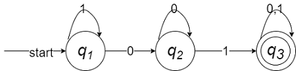
状态转移表：
- 每个状态$q$对应一行，每个字符$a$对应一列
- 若有$\delta(q,a)=p$，用第$q$行第$a$列中填入的$p$表示
- 开始状态$q_0$前，标记箭头 → 表示
- 接受状态$q \in F$前，标记星号*表示
| 0 | 1 | |
|---|---|---|
| $→q_1$ | $q_2$ | $q_1$ |
| $q_2$ | $q_2$ | $q_3$ |
| $*q_3$ | $q_3$ | $q_3$ |
例2：若$\Sigma=\lbrace 0,1 \rbrace$,给出接受全部含有奇数个1的串DFA。
有两个状态：偶数个1和奇数个1，首先画出状态转移图：
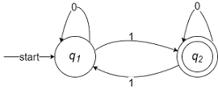
对应的形式化定义为：
其中$\delta$为：
例3：若$\Sigma=\lbrace 0,1 \rbrace$,给出接受全部含有偶数个0和偶数个1的串的DFA
首先画出“接受偶数个0的状态转移图”
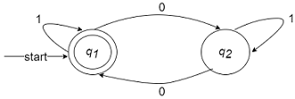
再画出“接受偶数个1的状态转移图”
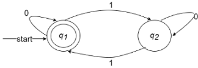
将两个DFA的两种状态分别记为$a,b$和$m,n$，然后做笛卡尔积
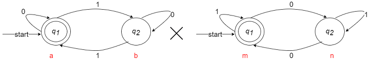
两个状态的DFA与两个状态的DFA做笛卡尔积，有四个状态，新的DFA如下
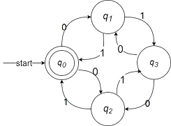
其中$q_0=am$，$q_1=bm$，$q_2=an$，$q_3=bn$
扩展转移函数：
扩展$\delta$到字符串，定义扩展转移函数：$\hat \delta : Q × \Sigma^{\ast} → Q $为：
其中$a \in \Sigma, \ w,x \in \Sigma^{\ast}$，那么，当$w=a_0 a_1 … a_n$，则有：
例：接受全部含有01子串的DFA，$\hat\delta$处理串0101的过程：
状态转移图如下：
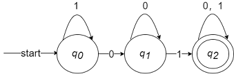
DFA的扩展转移函数$\hat\delta$在任意特定状态$q$接受特定字符串$w$结束状态都是确定的
例：对任何状态$q$及字符串$x$和$y$，证明$\hat\delta(q,xy)=\hat\delta(\hat\delta(q,x),y)$
证明：对$y$使用归纳法：
当$y=\epsilon$，$\hat\delta(\hat\delta(q,x),\epsilon) = \hat\delta(q,x) = \hat\delta(q,x\epsilon)$
当$y=wa$时，$\hat\delta(q,xwa)=\delta(\hat\delta(q,xw),a)=\delta(\hat\delta(\hat\delta(q,x),w),a) = \hat\delta(\hat\delta(q,x),wa)$
若$D = (Q, \Sigma, \delta, q_0, F)$是一个DFA，则$D$接受的语言为：
DFA可以作为语言的识别器，也可以用来定义语言。如果语言$L$是某个DFA $D$的语言，即$L = L(D)$，则称$L$是正则语言。
- $\emptyset$和$\lbrace \epsilon \rbrace$都是正则语言
- 若$\Sigma$是字母表，$\Sigma^n$，$\Sigma^{\ast}$都是$\Sigma$上的正则语言。
例：设计DFA接受$\lbrace 0,1 \rbrace$上的字符串$w$,且$w$是3的倍数的二进制数
分析：读入一个0，相当于乘2；读入一个1，相当于乘2加1。根据除3取余结果有三种状态：$q_0=3k,q_1=3k+1,q_2=2k+2 (k \in N)$，根据此画出状态转移表：
| 0 | 1 | |
|---|---|---|
| $q_0$ | $q_0$ | $q_1$ |
| $q_1$ | $q_2$ | $q_0$ |
| $q_2$ | $q_1$ | $q_2$ |
如果把开始状态设为$q_0$，终结状态也是$q_0$，那么该DFA会接受$\epsilon$，而且该DFA还会接受0开头的非零二进制数。为了防止这两种情况，引入开始状态$q_s$和为串以0开头的状态，一旦串以0开头，在接受字符，它将被“stuck”。对应的状态转移图如下：
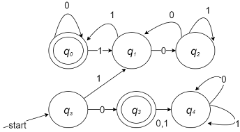
非确定的有穷自动机
- 确定的有穷自动机
- 非确定的有穷自动机
- 形式语言
- 扩展转移函数与NFA的语言
- DFA与NFA的等价性
- 带有空转移的非确定的有穷自动机
例：由0和1构成的串中，接受全部以01结尾的串，如何设计DFA
DFA如下
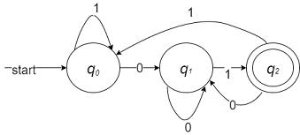
但是，这样的设计，实际上过于繁琐。
状态的非确定性转移：
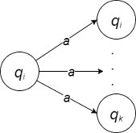
- 同一个状态在相同输入下，可以有多个转移状态
- 自动机可以处在多个当前状态
- 使得自动机的设计更容易
上述问题对应的非确定性状态转移图如下:
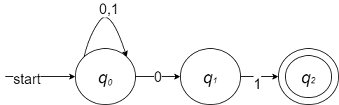
非确定性有穷自动机（Nondeterministic Finite Automation，NFA）A为五元组：
- $Q$：有穷状态集
- $\Sigma$：有穷输入符号集/字母表
- $\delta:Q × \Sigma → 2^Q$，状态转移函数 $(2^Q=\lbrace S | S \subseteq Q \rbrace)$ 从一个状态可以跳转到多个状态
- $q_0 \in Q$：初始状态
- $F \subseteq Q$：终结状态集或接受状态集
例：由0和1构成的串中，接受全部以01结尾的串，设计NFA
五元组为$A=(\lbrace q_0,q_1,q_2 \rbrace. \lbrace 0,1 \rbrace. \epsilon. q_0, \lbrace q_2 \rbrace)$,转移函数
在DFA中，$\delta$函数 的返回值不再是一个状态，而是一个集合:$\delta(q_1,0)=\lbrace q_2 \rbrace $
当一个未定义的动作发送，返回也不再是$\epsilon$而是$\emptyset$:$\delta(q_2,0)=\emptyset$
对于NFA，只要有一条路径可以接受串，就可以接受该串：
也可将NFA的执行过程理解成操作系统中的 fork()
NFA的状态转移表：
| 0 | 1 | |
|---|---|---|
| $\to q_0$ | $\lbrace q_0,q_1 \rbrace$ | $\lbrace q_0 \rbrace$ |
| $q_1$ | $\emptyset$ | $\lbrace q_2 \rbrace $ |
| $* q_2$ | $\emptyset$ | $\emptyset$ |
NFA的扩展转移函数：
定义：扩展$\delta$到字符串，定义扩展转移函数$\hat\delta : Q × \Sigma^{\ast} → 2^Q$为：
其中$a \in \Sigma, \ w,x \in \Sigma^{\ast}$
NFA接受的语言：
定义：若$N = (Q, \Sigma, \delta, q_0, F)$是一个NFA，那么$N$接受的语言为
例：$L=\lbrace w \in \lbrace 0,1 \rbrace^{\ast} | w \text{的首尾字符相同} \rbrace$的NFA
开头为0则结尾是0，开头是1则结尾也是1。特殊考虑空串的情况下，接受$\epsilon$，可以轻易的画出对应的NFA状态转移图：
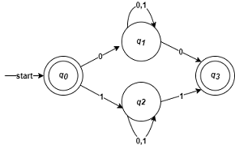
例：$L=\lbrace w \in \lbrace 0,1 \rbrace^{\ast} | w \text{ either begin or ends with 01} \rbrace $的NFA
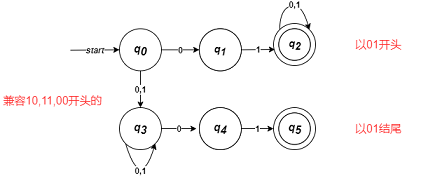
DFA与NFA的等价性：
定理1：如果语言$L$被NFA接受，当且仅当$L$被DFA接受
一个DFA的语言，构造识别他的NFA，把转移函数改为返回单值集合的对应DFA转移函数即可；
一个NFA语言，要构造识别他的DFA，使用子集构造法：
如果NFA $N = (Q_N, \Sigma, \delta_N, q_0, F_N)$，构造DFA：$D = (Q_D, \Sigma, \delta_D, \lbrace q_0 \rbrace, F_D)$：
- $Q_D = 2^{Q_N}$，即$\lbrace S | S \in Q_N \rbrace $
- $F_D = \lbrace S | S \subseteq Q_N, S \cap F_N \not= \emptyset \rbrace$
- $\forall S \subseteq Q_N, \ \forall a \in \Sigma$：
那么有$L(D)= L(N)$
证明：对$|w|$用归纳法，往证：$\hat\delta_D( \lbrace q_0 \rbrace,w) = \hat\delta_N(q_0,w)$
- 归纳基础：当$|w|=0$，即$w=\epsilon$：
- 归纳假设：假设$|w|=n$，命题成立
- 归纳地推：当$|w|=n+1$则$w=xa (a \in \Sigma)$
因为$\hat\delta_D(\lbrace q_0 \rbrace, w) = \hat\delta_N(q_0, w)$，所以：
所以$L(D) = L(N)$
NFA和DFA的读头只能向一侧移动，如果读头可以向两侧移动，那就是一个图灵机。DFA和NFA在识别语言的能力上是等价的，在识别语言的效率上是否一致还是位置的（$P=NP$)
子集构造法：
例：接受全部以01结尾的串的NFA
状态转移图和状态转移表如下：
| 0 | 1 | |
|---|---|---|
| $\to q_0$ | $\lbrace q_0,q_1 \rbrace$ | $\lbrace q_0 \rbrace$ |
| $q_1$ | $\emptyset$ | $\lbrace q_2 \rbrace $ |
| $* q_2$ | $\emptyset$ | $\emptyset$ |
转化为DFA，先构造对应DFA状态转移表，过程如下：首先把第一行初始状态$\q_0$写成集合$\lbrace q_0 \rbrace$，对应右侧状态不变。此时DFA的状态集为：$\lbrace \lbrace q_0 \rbrace, \lbrace q_0,q_1 \rbrace \rbrace$，此时产生了新的状态$\lbrace q_0,q_1 \rbrace$。把新状态$\lbrace q_0,q_1 \rbrace$对应的转移规则写入第二列，分别为$\lbrace q_0,q_1 \rbrace$和$\lbrace q_0,q_2 \rbrace $，此时产生了新的状态$\lbrace q_0,q_2 \rbrace $。把新的状态$\lbrace q_0,q_2 \rbrace $写入第三行，对应的转移状态是$\lbrace q_0,q_1 \rbrace$和$\lbrace q_0 \rbrace$，此时不再出现新的状态，完成。完整转移状态表如下：
| 0 | 1 | |
|---|---|---|
| $\to \lbrace q_0 \rbrace$ | $\lbrace q_0,q_1 \rbrace$ | $\lbrace q_0 \rbrace$ |
| $\lbrace q_0, q_1 \rbrace$ | $\lbrace q_0,q_1 \rbrace$ | $\lbrace q_0,q_2 \rbrace $ |
| $* \lbrace q_0,q_2 \rbrace$ | $\lbrace q_0,q_1 \rbrace$ | $\lbrace q_0 \rbrace$ |
画出对应的状态转移图如下：
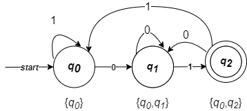
例：设计DFA识别$L=\lbrace w \in \lbrace 0,1 \rbrace ^ * | w \text{倒数第3个字符是1} \rbrace$
要写出对应的DFA很困难，但是先写出对应的NFA则很简单，NFA的确可以起到简化有限状态机的设计的作用。先画出的NFA状态如下：
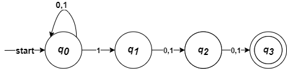
再写出对应的NFA状态转移表
| 0 | 1 | |
|---|---|---|
| $\to q_0 $ | $\lbrace q_0 \rbrace$ | $\lbrace q_0,q_1 \rbrace$ |
| $ q_1 $ | $\lbrace q_2 \rbrace$ | $\lbrace q_2 \rbrace $ |
| $ q_2 $ | $\lbrace q_3 \rbrace$ | $\lbrace q_3 \rbrace$ |
| $* q_3 $ | $\emptyset$ | $\emptyset$ |
然后写出NFA转DFA的状态转移图
- 带有空转移的非确定有穷自动机
- $\epsilon-$闭包
- 扩展转移函数与$\epsilon-$NFA的语言
- $\epsilon-$NFA与DFA等价性
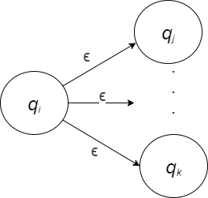
- 允许状态因空串$\epsilon$而转移，即不消耗输入字符串就发生状态的改变
- 进一步简化自动机的设w计
定义：带空转移非确定有穷自动机($\epsilon$-NFA)，A为五元组：
- $Q$：有穷状态集
- $\Sigma$：有穷输入符号集/字母表
- $\delta:Q × (\Sigma \cup \lbrace \epsilon \rbrace)\to 2^Q$，状态转移函数
- $q_0 \in Q$：初始状态
- $F \subseteq Q$：终结状态集或接受状态集
例：设计$L=\lbrace w \in \lbrace 0,1 \rbrace^{\ast} | \text{$w$倒数3个字符至少有一个是1} \rbrace$的NFA
可以利用之前的例子，增加几个接收状态即可：
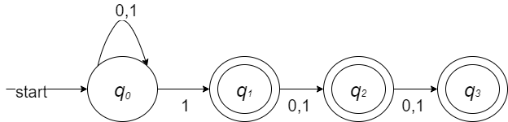
也可以利用NFA多转移的特性，画出这样的转移状态图：
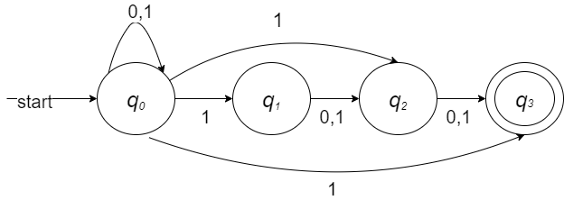
使用空转移可以进一步简化设计：
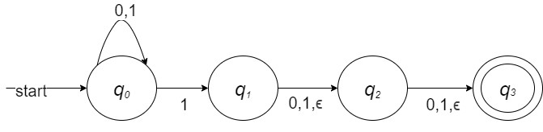
对应的状态转移表：
| 0 | 1 | $\epsilon$ | |
|---|---|---|---|
| $\to q_0$ | $\lbrace q_0 \rbrace$ | $\lbrace q_0,q_1 \rbrace$ | $\emptyset$ |
| $q_1$ | $\lbrace q_2 \rbrace$ | $\lbrace q_2 \rbrace$ | $\lbrace q_2 \rbrace$ |
| $q_2$ | $\lbrace q_3 \rbrace$ | $\lbrace q_3 \rbrace$ | $\lbrace q_3 \rbrace$ |
| $*q_3$ | $\emptyset$ | $\emptyset$ | $\emptyset$ |
自动机在某个状态，当读入某个字符，NFA和$\epsilon$-NFA可能有多个转移，NFA，$\epsilon$-NFA，DFA也可能都没有转移；当不读入字符时候就发生了转移，就一定是$\epsilon$-NFA。
$\epsilon$-NFA是一种特殊的NFA，后续的NFA，一般指的都是$\epsilon$-NFA
当输入字符串是011时，$\epsilon$-NFA的状态变化如下：
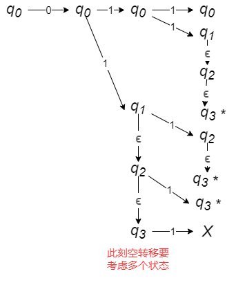
当某个状态有空转移的时候，需要考虑通过空转移能到的所有状态。这种对于当前状态，补充和扩展所有空转移到达的状态的，数学上定义就是闭包。
状态的闭包
定义：状态$q$的$\epsilon-\text{闭包}$（$\epsilon-Closure$）记为：$E_{CLOSE}(q)$，表示从$q$经过$\epsilon\epsilon…\epsilon$序列可达的全部状态集合，递归定义为：
- $q \in E_{CLOSE}(q)$
- $\forall p \in E_{CLOSE}(q)$，若$r \in \delta(p,\epsilon)$，则$r \in E_{CLOSE}(q)$
对与如下状态转移图，求闭包：
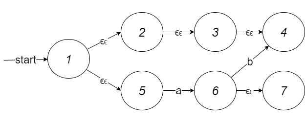
| $E_{CLOSE}(p)$ | |
|---|---|
| 1 | $\lbrace 1,2,3,4,5 \rbrace $ |
| 2 | $\lbrace 2,3,4 \rbrace $ |
| 3 | $\lbrace 3,4 \rbrace $ |
| 4 | $\lbrace 4 \rbrace $ |
| 5 | $\lbrace 5 \rbrace $ |
| 6 | $\lbrace 6,7 \rbrace $ |
| 7 | $\lbrace 7 \rbrace $ |
需要注意状态的闭包一定包含自身！
集合的闭包：
定义：状态集$S$的$\epsilon$-闭包为：
即状态集中状态闭包的并集。
$\epsilon$-NFA的扩展转移函数：
定义：扩展$\delta$到字符串，定义扩展转移函数$\hat\delta:Q × \Sigma^{\ast} → 2^Q$为：
其中$a \in \Sigma$，$w,x \in \Sigma*$
续例：例：$L=\lbrace w \in \lbrace 0,1 \rbrace^{\ast} | \text{$w$倒数3个字符至少有一个是1} \rbrace$的NFA下，求$\hat\delta(q_0,10)$=?
根据扩展转移函数的定义：
若$E = (Q, \Sigma, \delta, q_0, F)$是一个$\epsilon$-NFA，则$E$接受的语言为：
构造与$\epsilon-$NFA等价的DFA：
子集构造法（$\epsilon-$NFA消除空转移）
如果$\epsilon-$NFA $E = (Q_E, \Sigma, \delta_E, q_E, F_E)$，构造DFA
- $ Q_D = 2^{Q_E} $，或 $ Q_D = \lbrace S \vert S \subseteq Q_E | S = E_{CLOSE}(S) \rbrace $
- $ q_D = E_{CLOSE}(q_E) $
- $ F_D = \lbrace S | S \in Q_D, S \cap F_E \not= \emptyset \rbrace$
- $ \forall S \in Q_D, \forall a \in \Sigma $
那么$L(D)=L(E)$
求上例$\epsilon-$NFA对应的DFA，先列出NFA的状态转移表和闭包：
| 0 | 1 | $\epsilon$ | $E_{CLOSE}$ | |
|---|---|---|---|---|
| $\to q_0$ | $\lbrace q_0 \rbrace $ | $\lbrace q_0,q_1 \rbrace $ | $\emptyset$ | $\lbrace q_0 \rbrace $ |
| $q_1$ | $\lbrace q_2 \rbrace $ | $\lbrace q_2 \rbrace $ | $\lbrace q_2 \rbrace$ | $\lbrace q_1,q_2,q_3 \rbrace $ |
| $q_2$ | $\lbrace q_3 \rbrace $ | $\lbrace q_3 \rbrace $ | $\lbrace q_3 \rbrace$ | $\lbrace q_2,q_3 \rbrace $ |
| $*q_3$ | $\emptyset$ | $\emptyset$ | $\emptyset$ | $\lbrace q_3 \rbrace$ |
求对应$\epsilon$-NFA状态转移表过程和求NFA的状态转移表过程类似。从开始状态起，把$q_0$写成|$\lbrace q_0 \rbrace$，区别的是，对于返回状态还需求一次闭包。从上至下，从左至右求，最后因为$q_3$是接受状态，所以把带有$q_3$的都标记为接收状态。结果如下：
| 0 | 1 | |
|---|---|---|
| $\to \lbrace q_0 \rbrace$ | $\lbrace q_0 \rbrace $ | $\lbrace q_0,q_1,q_2,q_3 \rbrace $ |
| $*\lbrace q_0,q_1,q_2,q_3 \rbrace $ | $\lbrace q_0,q_2,q_3 \rbrace $ | $\lbrace q_0,q_1,q_2,q_3 \rbrace $ |
| $*\lbrace q_0,q_2,q_3 \rbrace $ | $\lbrace q_0,q_3 \rbrace $ | $\lbrace q_0,q_1,q_2,q_3q_2,q_3 \rbrace $ |
| $*\lbrace q_0,q_3 \rbrace $ | $\lbrace q_0 \rbrace $ | $\lbrace q_0,q_1,q_2,q_3 \rbrace $ |
定理：如果语言$L$被$\epsilon$-NFA接受，当且仅当$L$被DFA接受。
证明：必要性显然成立，因为任何DFA都是$\epsilon-$NFA。下面证明充分性，对$w$归纳，往证$\hat\delta_E(q_E,w) = \hat\delta_D(q_D,w)$
- 当$w = \epsilon$时
- 当$w = xa$时
例：设计一个$\epsilon-$NFA，接受语言：$\lbrace 0^k | k是2或3的倍数$
即设计一个$\epsilon-$NFA接受长度为2或3的倍数的’0’串，对于这种两个或条件的，可以分别设计接受2的倍数0串的$\epsilon-$NFA和接受3的倍数0串的$\epsilon-$NFA，再用空转移的特性把他们合并起来：
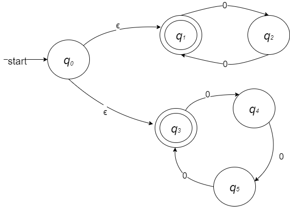